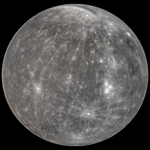

Сообщение от Astro
-Это самая маленькая планета. Походу поэтому расположилась ближе всех к Солнцу. Маминкин сынок, так сказать)-Днем там очень большая температура, никакое ваше Сочи такую жарень не переплюнет
-Странно, но ночью температура падает до -183,2 °C. Как вам такая магия?
Её период обращения вокруг Солнца составляет всего 87,97 земных суток - самый короткий среди всех планет Солнечной системы
